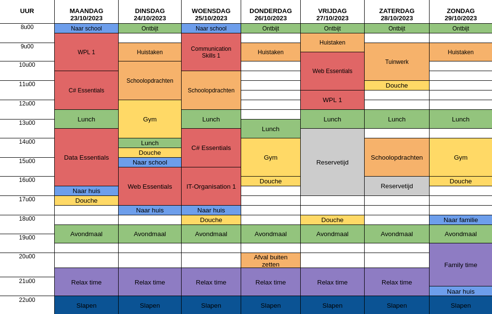

Hello, world!
Glenn Bokondo


About
Anything can be improved. With a skillset centered around critical thinking and technical analysis, I look for opportunities to improve, both myself and my environment. As a true nerd, I adore the process of knowledge acquisition, which enables me to quickly adapt to new environments.
My patience, perseverance, and analytical mindset enable me to tackle even the most complex problems, typically with a healthy dose of humor along the way. My experience in customer service has trained me to communicate efficiently in three languages (NL/FR/EN).
Solidarity, empathy, and compassion have been indispensible in pursuing improvement, and continue to inspire me to stay true to myself in my interaction with others, with respect for the needs and expectations of others.
As a software developer with 3 years of industry experience, I am currently looking for a dynamic work environment that will enable and support my continued growth.
Skills
Tools
- VSCode
- Vue
- React
- Node
- Docker
- Git
- Jira/BitBucket/Confluence
- MongoDB
Programming languages
- JavaScript (TypeScript)
- C#
- Python
- Rust
Operating Systems
- Windows
- MacOS
- GNU/Linux
Other
Fluent in English, Dutch, and French.
Audio production (Ableton, Audacity).
Video production (Adobe Premiere, Kdenlive).
Image editing (Adobe Photoshop, GIMP, Aseprite).
Education
| Year | Cycle | Type |
|---|---|---|
| 2005 | 1st | GSE Latin |
| 2007 | 2nd | GSE Latin |
| 2011 | 3rd | GSE Humanities |
- 2005: GSE Latin, 1st cycle
- 2007: GSE Latin, 2nd cycle
- 2011: GSE Humanities, 3rd cycle
Experience
| Year | Organisation | Role |
|---|---|---|
| 2014 | Carglass® | Callcenter Agent |
| 2018 | itsme® | Callcenter Agent |
| 2019 | Train4SmartServices | Student |
| 2019 | Oakfields | Software Developer |
| 2023 | PXL | Student |
- 2014: Callcenter Agent, Carglass®
- 2018: Callcenter Agent, itsme®
- 2019: Student, Train4SmartServices
- 2019: Software Developer, Oakfields
- 2023: Student, PXL
Portfolio
Intro
In this section, I'll be taking you through a variety of recent experiences, reflections, projects, schedules, and assignments. While I typically prefer to keep things a bit more terse, I will be going into more detail where specifically required.
It's been interesting to list up all the experienced I've had in recent years, and looking back on them, I am able to express both my gratitude for the lessons learned and the people who supported my growth, as well as express my disappointment with avoidable setbacks and missed opportunities. Hopefully, this document provides a look into my journey as a software developer. Bookmark this page to stay updated!
Log
Development
Why programming?
Why this educational track?
I already have experience, but I am lacking a higher educational degree. In my time as a software developer, I noticed insufficiencies in my fundamental knowledge, inhibiting further growth. After nearly burning myself out at my previous employer, I took this opportunity to further my education at the beginning of my professional career, rather than suffering through the lack of knowledge for the next several years. While, in theory, continuous education and self-improvement should be the cornerstone of each creative professional's process, I've found that, in practice, all that matters to the business is building working software. In some circumstances, such as with ambitious startups, this can come at the cost of a developer's personal development. In other words, I'm making up for lost time.
Why would the job suit you?
I love solving problems. While I feel that about sums it up, the school assignment for which this portfolio was written mandates that I continue for a while longer, so I will. For most people, interacting with a new piece of technology usually centers around the "what?", as in: "what can it do?" This is by all means the most important question to ask, because if what it can do is worthless, so is the product, along with any time and effort expended during its creation. Heartbreaking.
But there are other questions we can ask, such as:
- "How does it work?"
- "Why does it work like that?"
- "Are there other ways to accomplish the same goal?"
- "How does this compare to similar technology?"
- "What enabled the innovation driving this project's success?"
- ...
These questions are more commonly heard in conversations among people in IT and, more broadly speaking, in engineering. As far back as I remember, I could never quite satisfy my curiosity by simply answering the question "what can it do?". So, I developed the habit of reaching out, exploring the available information around me and researching whatever piques my interest. Over time, I noticed a huge benefit to this omnidirectional approach to learning. By going wherever my intrinsic motivation takes me, I've been able to assemble a solid knowledge base, spanning various fields of study. In effect, I've unwittingly developed T-shaped skills centered around software development.
Programmer skill set
| Overview | |
|---|---|
| Rol | Ontwerper |
| OLR1 | Inschatten of de realisatie van de opdracht haalbaar is op basis van het ontwerp, de gecommuniceerde projectdoelstellingen. |
| OLR2 | De gegradueerde maakt op basis van de analyse een onderbouwd voorstel voor a) de standaarden van het ontwerp, b) de programmeertaal en c) de methodiek. De gegradueerde stemt het voorstel af met de ontwikkelaar, softwarearchitect of de functioneel analist. |
| Rol | Programmeur |
| OLR3 | De gegradueerde realiseert (onderdelen van) softwareapplicaties en gegevensstructuren op basis van de analyse en het projectplan, de beschikbare tools, de vooropgestelde methodiek en de eigen planning. |
| OLR4 | De gegradueerde is medeverantwoordelijk voor de eigen ICT-infrastructuur en draagt bij tot de gedeelde ICT-infrastructuur nodig voor het ontwikkelen, testen en in productie brengen van projecten. |
| OLR5 | De gegradueerde programmeert softwaretoepassingen volgens de standaarden en afspraken binnen de organisatie zoals beschreven in de bedrijfsprocedures, (kwaliteits)standaarden, de voorschriften en eisen voor informatieveiligheid. |
| OLR6 | De gegradueerde gaat in overleg met de ontwikkelaar, projectleider of functioneel analist na of het opgeleverde product onderhoud en/of aanpassingen nodig heeft. De gegradueerde voert het onderhoud en de aanpassingen op een projectmatige manier uit, rekening houdend met eerder gemaakte afspraken. |
| Rol | Tester |
| OLR7 | De gegradueerde gaat volgens (zelf ontwikkelde) testscenario's de werking en functionaliteit van de gerealiseerde code na, gebruikmakend van de juiste tools, en verbetert deze op basis van feedback van de ontwikkelaar, de projectleider en/of gebruikers. |
| Rol | Communicator/teamspeler |
| OLR8 | De gegradueerde werkt constructief en actief samen in een multidisciplinair team en participeert actief tijdens overlegmomenten. De gegradueerde zoekt mee naar oplossingen om vaak voorkomende problemen te vermijden. |
| OLR9 | De gegradueerde communiceert en rapporteert efficiënt over het geleverde werk, aangepast aan het doelpubliek en gebruikt hiervoor indien nodig het gepaste Engelstalige vakjargon. |
| OLR10 | De gegradueerde documenteert de zelf ontwikkelde applicaties op een adequate en overzichtelijke manier volgens de afspraken binnen de organisatie. De gegradueerde verwerkt alle documentatie met betrekking tot de eigen realisaties in de kennisdatabank en zorgt ervoor dat afwijkende of nieuwe oplossingen hierin geïntegreerd worden. De gegradueerde geeft kwalitatieve input voor de gebruikershandleidingen, referentiegidsen en online hulpbronnen. |
| Rol | Levenslang lerende IT-professional |
| OLR11 | De gegradueerde onderhoudt zijn deskundigheidsniveau door relevante IT-ontwikkelingen op te volgen. |
| OLR12 | De gegradueerde is zelfkritisch, ontwikkelt de nodige zelfkennis en gebruikt deze om zijn persoonlijke en professionele groei te bevorderen. |
| OLR13 | De gegradueerde handelt deontologisch en houdt rekening met de veiligheids- en privacyrichtlijnen. |
Progress report per role
Designer
Current status of progress
While my focus and interest is primarily on back end work, I was able to design quite a few mockups, wireframes, and design proposals while working as a software developer. These would often serve to gain approval and buy-in from a Product Owner, stakeholder, or the scrum team. In some cases, they would serve to visually clarify requirements for developers being onboarded onto the project, or to dial in specific details during the sprint. I've become competent in using tools such as Whimsical or Figma to quickly work out a simple mockup to be attached to a Jira ticket, as this was one of my responsibilities during my time as a P.O.
What is going well
- Ability to clearly and quickly visually communicate
- Ability to provide pragmatic proposals for aesthetic improvement to existing features
What could be going better
- Using modern design tools to generate starter templates with pre-built HTML/CSS
Programmer
Current status of progress
Despite setbacks in terms of employer culture, I was able to learn a reasonable amount. After 3 years of working at a startup (infamous for their high demand for individual flexibility), I've been able to gain professional experience along all major components of a modern tech stack (MEVN, i.e.: MongoDB, Express, Vue, Node.js). Outside of work, I was able to explore new technologies, and experiment with productivity methodologies.
What is going well
- Developing confidence in my ability to produce working software at a reasonable rate
- Helping other developers with debugging, troubleshooting, and general education
What could be going better?
- Managing stress and workload
- Keeping a healthy work/life balance
Tester
Current status of progress
I've had plenty of opportunities to experiment with testing methodologies and various tools. But what stuck with me most is, when push comes to shove, how little people end up caring about testing. Too often is it seen as optional, or something to do when there is extra time, as opposed to an integral part of the development process. At Oakfields, we struggled with aligning requirements from the business analysis phase with testable requirements at the end of the sprint, leading to many disagreements about whether or not a ticket was done. To resolve this, I proposed a simple workflow in which the user stories would need to be provided in a testable format (e.g.: "if... when... then...") so that tests could be provided as both a requirement checklist during development as well as a test suite after release. The proposal was rejected for the reason of "too much effort", and so we continued writing vague requirements in analysis, no tests to match. The disagreements also continued.
What is going well
- Defensive programming
- Debugging
What could be going better
- Integrating Test Driven Development into my workflow
Communicator/Team player
Current status of progress
At this stage of my career, I have about 4 years of callcenter experience, as well as 3 years of software development experience. The callcenter work did wonders for my ability to stay calm under pressure and communicate clearly, as well as teaching how to prioritize and compromise within a large team to provide customer delight at every level. These skills came in handy as a software developer, where soft skills are anything but guaranteed! My time in the callcenter made me feel a lot more comfortable with talking to stakeholders in a professional and productive way, and while it was definitely challenging, it was a good type of challenge that I am in retrospect very grateful to have experienced.
What is going well
- Being approachable to others, breaking the ice and letting them know I am available if help is needed
What could be going better
- Having fellow students really open up about their insecurities and concerns so that they can be addressed
Lifetime learner as IT-professional
Current status of progress
In the past 5 years, I've gone from working in a callcenter to learning how to program, and becoming a fulltime software developer. During this time, I taught myself a vast amount of new technology, and I'm still learning new information every day. Overall, I think knowledge aqcuisition is my strongest trait, as I am able to pick up just about anything and get to an amateur level quite fast. It's also a major reason for choosing this profession, since I'll never run out of things to learn!
What is going well
- Exposure to new information
- Discussing methodologies and solutions with other developers
What could be going better
- Establishing clear direction for further learning
Three examples per role
The following section provides three examples of activities, divided by role. Each example comes directly from my personal experience in the field.
Designer
Mockup for mobile app
For the Riserva project, which centered around evaluating the performance of callcenter agents, I was tasked with building a mockup for the mobile version. I recieved positive feedback about the proposal, and learned a lot about translating general design principles to a smaller screen size.
Wireframe for development team
During a brief period as P.O. on the Mileviewer project, I would often have to design a basic wireframe to serve as a starting point for the front-end development team. I would then often support the back-end development myself.
Selecting new company logo
As part of a rebranding campaign, the entire team was involved in discussing and comparing various logo designs, providing feedback, and ultimately deciding how to proceed by voting.
Programmer
CSV upload feature
For the Mileviewer project, we needed a way to upload and process CSV data. The input would contain shipment information, each line of which needed to be parsed, evaluated, and processed. Users required a page on which to perform the upload, as well as feedback on the upload process, a history of uploads, and the ability to download previous uploads for review. One of my first big back-end tickets involved providing this functionality, under supervision and with support from the team lead. I later spent a lot of time supporting and extending the functionality myself.
Database entity copy feature
For the Mileviewer project, users would be assigned offices as a way to separate shipment information per location. Users required a convenient way to duplicate previously configured offices so that they no longer needed to manually copy information over to reuse it. I was tasked with developing this functionality, building on the previous experience with the CSV upload. It taught me a lot about how non-relational document databases (such as MongoDB) work.
Integration with external freight forwarder API
At a certain point in the Mileviewer project, we had expanded the upload and data transfer of the application to such an extent that the next big feature was an integration system, providing support for shipment data import from each major freight forwarder (e.g.: FedEx, UPS, DHL, etc...). Once again, I was tasked with the development of this feature. With incomplete analysis and a deadline, I got to work on gathering documentation, reaching out to support staff to clarify requirements for API key approval, writing documentation and briefing fellow team members on certain requirements. Slowly, at great personal cost, progress was made. I remember these couple of months of my career as the first time I didn't quite feel like a junior developer anymore, but I've never been quite clear on where exactly that distinction lies anyway.
Tester
Testing plan in TestRail
I collaborated with my colleague Fred to provide a robust testing suite that would be reusable for all other projects, enabling us to accelerate development without getting blindsided by defects on launch day. In the end, it was all thrown in the bin.
Unit tests for business critical functionality
After some minor incidents with instability of the application, it was decided that unit test would be provided for at the very least the most critical parts of the application. These were written by me, and consequently forgotten about, even at my request to update them. The reason stated was higher priorities, but aren't there always?
Automate testing in CI/CD pipeline
We noticed that manual testing took a lot of time, and so I was tasked with automating a portion of the tests. I consulted my colleague Fred, and we collaborated to implement a useful BitBucket pipeline that could trigger a DeltaBlue deploy after running a specific test suite in TestRail, while also neatly updating ticket status in Jira!
Communicator/Team player
Member of Agile team
For about 3 years, I have lived a life of Planning Meeting, Daily Standup, Review, Retrospective & Repeat. I'm no stranger to open communication, compromising, and delivering value! I would often lead effort to streamline our process for the benefit of our people (specifically the developer experience was becoming needlessly convoluted), but this was not always received in the most positive way.
Write technical documentation for external consumption of API
Since I worked up to be the teammember with the most knowledge & experience on the Mileviewer project, I was tasked with writing the technical documentation that would be used by one of our partners during the integration we were developing with their ERP. The documentation included a full OpenAPI specification document, and I acted as the primary person of contact to answer any questions from the external parties.
Customer support & stakeholder meetings
I was able to leverage my callcenter experience to provide trilingual customer support, and to support & educate my colleagues on best practices. Later, I also attended weekly stakeholder meetings to discuss goals on the Mileviewer project, functioning in the capacity of a tech lead.
Lifetime learner as IT-professional
Exploration of tools and languages
In my free time over the past year, I have started exploring the Rust and Go programming languages, used a little Python while tinkering with the BirdNET project, played with the Godot game engine to create a small shmup game, and learned how to use Pico-8 to prototype game concepts quickly.
Database sanitization script
To improve security, I was tasked to provide a database sanitization script that would strip sensitive personal information from our test database as part of an automated script in the devops pipeline.
Exploring Linux
As a lifetime Windows user, I only recently got to experience MacOS with my worklaptop being an M1 Macbook. I wanted to continue learning about other operating systems, in a continued effort to become as versatile as possible. I'd also like to improve my ability to remotely connect via terminal to work directly on remote servers (almost all of which run Linux), which has been necessary in the past to perform specific updates. So, I spent a couple of weeks trying out various Linux distros before settling on PopOS as my daily driver, with some Debian on older devices. It's been great fun! And it's made using Windows a lot less fun, unfortunately.
Assignments
POP - Reflection
Overview
Reflect on personal strengths & weaknesses, using the Kolb's reflective cycle and the STARR-method.
Challenges & learnings
While these are very useful models for first learning how to self-evaluate, I've found more success with a more ecclectic approach in which I try out a bunch of methods, and Frankenstein them all together into an approach that suits me better as an individual. Any more strict adherence to a model has, in my experience, only led to time wasted in pointless arguments that could have been better spent building things.
POP - Planning
Overview
Provide a detailed schedule for the following 2 weeks.
Challenges & learnings
Having been immersed in the Agile methodology, I'm quite used to planning tasks and breaking them down into small components. Though I would rarely, if ever, enter in as much detail as we did during this assignment (the result of which can be viewed in the log section). If I did, I would likely spend about as much time planning my work as I would actually performing the tasks! Rather, I've found it useful to keep a simple list around, with each task in sequence. This is used as my actual work schedule, to provide rough timeboxing for the purposes of aligning schedules with colleagues for collaborative moments. Additionally, if timing is tight, I will provide a simple time estimation for each task ahead of time, typically no more precise than 30 minute intervals. This makes it easier to cut non-critical requirements if necessary, or to discuss possible rearrangements in the delivery schedule depending on priority of each task.
POP - Guest speaker
Overview
Reflect on the lecture from a guest speaker working in the industry.
Challenges & learnings
Interestingly, Oakfields hired Brightest to assess our testing process. Together, we developed a rudimentary testing plan, for which me and my colleague Fred were mainly responsible. Fred had gained prior experience as a tester working with Mobile Vikings, and it was very helpful to discuss approaches and tooling with him. Unfortunately, Oakfields ultimately did little with the TestRail suite we had developed, complete with unit tests for each business critical part of the product, as well as integrations with Jira and Zendesk for easy defect tracking. One day, I tried to log in to TestRail to reuse some of the scripts we had written. To my suprise, the login failed. When clarifying the matter with the P.M., I was informed that the TestRail license had been revoked as it was "no longer being used". We hadn't recieved any prior warning, and therefore did not have any way of retrieving any part of the tooling, scripts, logs, etc... This effectively meant that all the work Fred and I undertook in an effort to improve our process and help the business had been erased. Turned to atoms. I don't know if you can tell, but I am still a little bitter about that particular experience.
Curriculum Vitae
Overview
Build a website to publish my resume.
Challenges & learnings
This particular assignment imposed the limitation of not allowing the use of frameworks, as well as discouraging the use of JavaScript. As such, it becomes an exercise in the fundamentals of HTML/CSS, which was a welcome refresher. Because the assignment itself wasn't particularily difficult, I decided to challenge myself to keep everything as simple as possible, and to limit the time I would allow myself to complete it. As expected, this resulted in a fun challenge at the cost of quality. It was particularily fun to actually implement some basic responsiveness in CSS, as this would typically not be done at my previous employer.
Cookie Clicker
Overview
Create a clone of Cookie Clicker, a popular incremental game.
Challenges & learnings
With my prior experience with C# during the Train4SmartServices course and a certain desire for challenge, I once again imposed a limitation on myself, as I had done with the CV assignment. I wanted to find out how far my currrent knowledge will get me, to paint a clear picture of where to improve in the next semester. And so, having completed most of the first iteration by December 2023, I gave myself about 48 hours for the final iterations. I was going for the sweaty, adrenaline-fueled atmosphere of a hackathon, and boy, did I succeed! It's not pretty, it has bugs, and I had to cut some functionalities due to lack of time (or rather, planning). But I can call it done, warts and all. This may seem quite extreme, bordering on irresponsible, from the perspective of a student trying to pass a class. But I've suffered through such situations in the past with more on the line than a simple grade, so I wanted to make the most out of this comparatively safe learning environment to really push myself, especially on the easier assignments.
Portfolio
Overview
Expand website to include school assignments.
Challenges & learnings
The most difficult part of this assignment is providing answers that are truthful without straying too far from the original questions. To address this, I have attempted to provide responses that are relevant to the question, but also demonstrate a broader and more general understanding of the topics at hand. If I had not made this adjustment, I would likely have little to say to each reflective question about which new knowledge was acquired. The total volume of work required has been relatively high compared to the learnings I've been able to extract from it so far, but I am patiently looking forward to the coming months, in which we will learn about more advanced topics.
Reflection
Describe personal strengths & weaknesses
Strengths
- Analytical mindset
- Empathy, compassion, tolerance
- Cool under pressure
Weaknesses
- Planning & organisation
- Consistency in performance
- Sociability
Reflect about a POP-session: Kolb & STARR
What did you learn?
To be completely honest, not much. Though that's not really anyone's fault! This was one of the first POP-sessions, and it makes sense to start with one of the most important aspects of improvement: evaluation. The audience these lectures are designed for seems to be the beginner and young adult, as it should be. Unfortunately, I am neither of these things. I would certainly have appreciated being taught these methods in school, but I've managed to put together the basic principles over time by doing my own research (along with a lot of trial and error).
How does the knowledge transfer to daily life as a programmer?
Trying to improve without self-evaluating would be like flying blind. To successfully iterate, we need to draw conclusions from our previous work about which improvements to make and how to accomplish them. In order to generate and collect data that is consistent, and therefore useful, it makes sense to add structure to how and when we perform such evaluations. Kolb's model and the STARR-method are two examples of this. They're easy to understand for just about anybody, and reasonably effective too! Ultimately, I would prefer to move away from repackaging existing concepts under new terminology, and would rather teach the underlying principles. But keeping audience design in mind once more, the accessibility of the simplified models is more than enough to kickstart a positive feedback loop!
X-factor reflection
(Em)passie
Wat is jouw passie? Hoe houdt dit verband met de opleiding die je bent aangevat?
Het ontwikkelen, doorgronden, en verfijnen van systemen, specifiek met als doel het oplossen van praktische problemen. Dit is ongeveer de definitie van "engineering" (i.e.: ingenieurswezen), waarvan software ontwikkeling een vorm is. Bij de opleiding Graduaat Programmeren staat software ontwikkeling centraal.
Wat geeft jou energie en goesting? En hoe zie je dit in je opleiding die je bent aangevat?
Het aanleren van nieuwe manieren om dingen aan te pakken of problemen op te lossen, m.a.w. innovatie, onderzoek, ontwikkeling. Ik leer liefst al doende, door projecten te bouwen, beperkingen op te leggen, en aandachtig te analyzeren.
Hoe zie je jezelf in dialoog gaan met anderen in de opleiding die je bent aangevat?
Als oudere student met relevante werkervaring kan ik waar nodig vragen beantwoorden, helpen bij het aanleren van moeilijkere concepten, of gewoon het moreel op peil houden door bijvoorbeeld anecdotes te vertellen over uitdagingen in mijn eigen professionele ervaringen.
Ondernemend & innovatief
Wat versta jij onder een ken-doementaliteit (ondernemend zijn in de brede zin van het woord) en hoe zie je dat in de opleiding die je bent aangevat?
Het besef dat de collectieve kennis van het menselijk ras toegankelijk is op eender welk moment, verleent zich tot continue zelfverbetering. Er zijn minder obstakels dan ooit voor de nieuwsgierige geest. Ondernemend zijn betekent het veranderen van de stelling "Ik kan het niet" naar "Ik weet niet hoe dit moet, maar ik kan het verder exploreren." Onwetendheid is dus geen beperking van ons vermogen, maar een opportuniteit tot verrijking.
Hoe ver sta jij op dit moment al in een ken-doementaliteit?
Ik heb ondertussen verschillende hobby's waar ik zo veel mogelijk vrije tijd aan spendeer, telkens vanuit eigen initiatief en als autodidact. Een paar voorbeelden: video & audio productie, elektronische muziekproductie met modulaire synthesizers, game development, technical writing, astronomie, en gewichtheffen.
(Internationaal) Samen(net)werken
Hoe ziet jouw netwerk er op dit moment uit? Kan je dit netwerk inzetten in functie van de opleiding die je hebt aangevat?
Mijn ex-collega's uit mijn tijd bij Oakfields kan ik altijd contacteren via sociale media. Zij werken ondertussen bij Mediaan op de Corda Campus, dus ik verwacht zeker even af te spreken volgend semester om bij te praten! Verder heb ik ook nog een aantal andere contacten uit het Train4SmartServices traject in Heerlen dat ik enkele jaren geleden heb doorlopen.
Hoe zou jij internationaal samen kunnen werken in de opleiding die je hebt aangevat?
Het grote merendeel van de langetermijnsbeslissingen die ik maak doelen op internationale samenwerking. Elke computer krijgt internationale taal- en landsinstellingen, met voertaal in het Engels, en QWERTY layout. Ik communiceer voornamelijk in het Engels waar mogelijk om mijn taalvaardigheid te onderhouden en verbeteren, aangezien Engels de lingua franca van IT is. Verder fungeerde ik vaak als tech support bij het plannen en ondersteunen van de conference calls tijdens sprint retrospectives en reviews. Ik heb met andere woorden alle middelen in huis om internationaal samen te werken, en heb ondertussen verschillende internationale contacten gelegd via mijn vorige werkgever.
Multi- & disciplinariteit
Wat weet je op dit moment al over de inhouden van je opleiding?
Vanuit mijn ervaring als web developer heb ik kennis opgedaan over werken met o.a. JavaScript, SQL, Agile/Scrum, Git, Atlassian producten (Jira/Confluence/BitBucket). Verder heb ik in het Train4SmartServices traject ook een verkorte cursus C# doorlopen.
Met welke andere disciplines (opleidingen / beroepen / ...) zou jij in aanraking kunnen komen in je opleiding?
Studenten onder departement PXL Digital, en daarbuiten studenten uit opleidingen zoals Bedrijfsmanagement (Business), of Communicatie (Media & Tourism). In principe kan IT in aanraking komen met eender welke andere discipline, op voorwaarde dat deze baat kan halen uit een softwarematige aanpak.